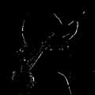
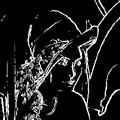
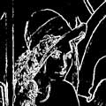
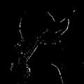
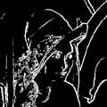
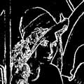

1차 미분(1st Differential)
윤곽(edge)이란 사전적으로는 물체의 외각을 나타내는 선 이라고 정의하며,
이러한 윤곽은 영상처리의 차원에서는 "영상을 특징 짓는 선 요소"라고 말할 수 있다.
여기서 다루는 내용은 인간의 능력 중에서 어떠한 풍경이나
인물을 인식하는 능력을 이용한 접근 방법이다.
흔히 우리가 대하는 삽화, 초상화, 만화등 인간이 묘사하는 영상의 많은 부분들은
대상물의 윤곽선을 주체로한 "선화(線畵)"로서 표현된다.
그러므로 영상처리에 있어서도 윤곽을 추출하는 것은
(이것을 "윤곽 추출" 또는 "edge 추출"이라고 한다.)
중요한 개념의 하나가 되고 있다.
그럼 윤곽과 영상과는 어떤 관계가 있을까?
영상중의 물체와 물체, 어떤 것은 물체와 배경의 경계가 윤곽이기 때문에
"영상의 농담과 색의 급격한 변화가 있는 부분"을 윤곽이라 말할 수 있다.
먼저 소개할 방법은 미분에 의한 영상처리 방법이다.
윤곽은 농담치가 급격히 변하는 부분이기 때문에
함수의 변화분을 취하는 미분 연산이 윤곽선 추출에 사용될 수 있다.
미분에는 1차미분(gradient)와 2차미분(Laplacian)이 있는데
이 방식들에 대해 간단히 설명하면 다음과 같다.
좌표 (x,y)의 경우 농담 분포를 나타낸 1차 미분값(gradient)은
크기와 방향을 가진 벡터량 G(x,y)=(fx ,fy)로서 표현된다.
여기에서 fx는 x방향의 미분,
fy는 y방향의 미분을 나타내며 fx, fy의 digital 영상은
x 방향의 미분 fx=f(x+1,y)-f(x,y)
y 방향의 미분 fx=f(x+1,y)-f(x,y) 으로 계산한다.
미분값 fx,fy 를 구하면, 아래의 식으로부터 윤곽의 강도와 방향을 계산할 수 있다.
√(fx2+fy2) 또는 |fx|+|fy| (| |는 절대값)
(x-1, y-1) (x, y-1) (x+1, y-1)
(x-1, y) (x, y) (x+1, y)
(x-1, y+1) (x, y+1) (x+1, y+1)
(데이터 배열구조)
수평방향 미분
윤곽을 추출함에 있어서 수평 방향의 미분을 취하려면 다음과 같은 알고리즘으로 처리를 하게 된다.
F(X, Y) = | F(X, Y-1) - F(X, Y+1)|
즉, 수평방향으로의 미분은 어느 한 점 (F(X, Y))을 기준으로 할 때 X좌표는 같고,
Y좌표만 중심 화소의 상하에 해당하는 화소들의 차이값을 구하는 관계로 얻을 수 있다.
프로그램을 살펴보면 다음과 같다.
/*****/* function for horizontal differntial method */******/
void Horizontal(void){
int k,m;
int gr_h[SIZE];
for(k=0;k < size;k++) for(m=0;m < SIZE;m++){
gr_h[m] = ( int )(image_in[k][m]-image_in[k+2][m]);
image_out[k][m]=(unsigned char)abs(gr_h[m]); }
수직방향 미분
수직 방향의 미분은 다음의 관계식으로 구할 수 있다.
F(X, Y) = | F(X+1, Y) - F(X-1, Y)
즉, 수직방향으로의 미분은 어느 한 점 (F(X, Y))을 기준으로 할 때 Y좌표는 같고,
X좌표만 중심 화소의 상하에 해당하는 화소들의 차이값을 구하는 관계로 얻을 수 있다.
프로그램을 살펴보면 다음과 같다.
/*******/* function for vertical differntial method ***/
void Vertical(void){
int k,m;
int gr_v[SIZE];
for(k=0;k < SIZE;k++)
for(m=0;m < SIZE;m++){
gr_v[m] = (int )(image_in[k][m]-image_in[k][m+2]);
image_out[k][m]=(unsigned char)abs(gr_v[m]);}
수직, 수평방향 미분
수직, 수평 방향의 미분은 앞에서 설명한 두가지 미분방법을 이용하여 구할 수 있다.
프로그램을 살펴 보면 다음과 같다.
/* function for horizontal and vertical differntial method **/
void Horiz_Vert(void){
int k,m;
int gr_v[SIZE], gr_h[SIZE];
for(k=0;k < SIZE;k++)
for(m=0;m < SIZE;m++){
/* 수평방향*/
gr_h[m] = ( int )(image_in[k][m]-image_in[k+2][m]);
image_out[k][m]=(unsigned char)abs(gr_h[m]);
/* 수직방향*/
gr_v[m] = ( int )(image_in[k][m]-image_in[k][m+2]);
image_out[k][m]=(unsigned char)abs(gr_v[m]);}
전체 1차 미분
마지막으로 1차미분을 수평, 수직, 대각선 방향으로 모두 취할 경우에 대한
프로그램을 살펴보면 다음과같다.
/********/* function for Gradient differntial method ****/
void Gradient(){
int k,m;
int gr_h[SIZE], gr_v[SIZE],gr_n[SIZE],gr_s[SIZE];
for(k=0;k < SIZE;k++)
for(m=0;m < SIZE;m++){
/* 수평 방향*/
gr_h[m] = ( int )(image_in[k][m]-image_in[k+2][m]);
image_out[k][m]=(unsigned char)abs(gr_h[m]);
/* 수직 방향*/
gr_v[m] = ( int )(image_in[k][m]-image_in[k][m+2]);
image_out[k][m]=(unsigned char)abs(gr_v[m]);
/* 대각선 방향*/
gr_n[m] = ( int )(image_in[k][m]-image_in[k+2][m+2]);
image_out[k][m]=(unsigned char)abs(gr_n[m]);
gr_s[m] = ( int )(image_in[k][m+2]-image_in[k+2][m]);
image_out[k][m]=(unsigned char)abs(gr_s[m]);}}
이러한 1차 미분 방식은 행렬의 형태로 테이블이 주어지는데,
흔히 이용하는 방법에 대하여 정리하면 다음과 같다.
연산자명 fx fy
0, 0, 0 0, 0, 0
Roberts 0, 1, 0 0, 0, 1
0, 0,-1 0,-1, 0
-1, 0, 1 1, 1, 1
Prewitt -1, 0, 1 0, 0, 0
-1, 0, 1 -1,-1,-1
-1, 0, 1 1, 2, 1
Sobel 2, 0, 2 0, 0, 0
-1, 0, 1 -1, -2,-1
-1 0, 1 1, √2, 1
Frei-Chen √2, 0,√2 0, 0, 0
-1 0, 1 -1, √2, -1
(Gradient 계산에 이용하는 미분 연산자)
Roberts 연산자는 다른 마스크보다 크기는 작지만 효과적으로 사용할 수 있다.
이 연산자는 잡음에 매우 민감하다. 다른 연산자들은 돌출된 영상의 값들을 잘 평균화 시킨다.
Sobel 연산자는 수평과 수직 윤곽보다는 대각선 방향에 놓여진 윤곽에 더 민감하며,
Prewitt 연산자는 대각 방향의 윤곽보다는 수평, 수직 윤곽에 더 민감하다.
위의 방법중 몇가지 예를 보면 다음과 같다.
 
(a) 원 영상 (b) Roberts
 
(c) Prewitt (d) Sobel

(a) 원 영상 (b) Roberts
 
(c) Prewitt (d) Sobel